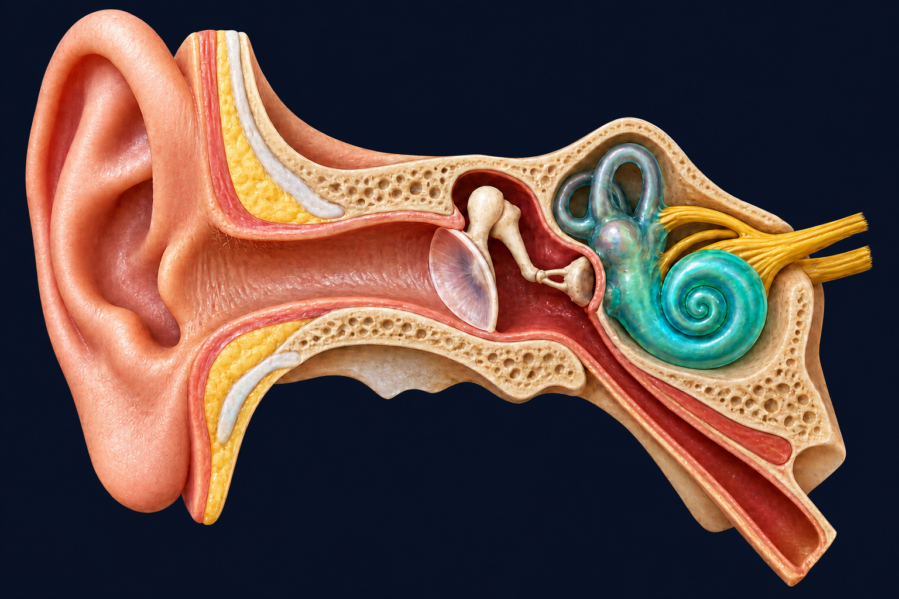

Hearing Is a Map, Not a Volume Knob
Your cochlea turns frequency into place. Sensorineural damage can leave gaps in that map.
Follow the sound into the cochlea

Over 1 billion young adults are at risk of permanent, avoidable hearing loss due to unsafe listening practices. WHO fact sheet
To understand what can be lost, first follow sound into the cochlea.
Inside the cochlea
Different frequencies produce their strongest response at different places along the cochlea. High frequencies peak near the base; lower frequencies travel farther toward the apex. Greenwood (1990)
Outer hair cells feed energy into cochlear vibration, contributing to hearing sensitivity and frequency selectivity. Ashmore (2019)
Find the sound
Different frequencies peak at different cochlear places.
This frequency produces its strongest response here, at the highlighted outer-hair-cell region beneath the travelling-wave peak.
Start at a comfortable volume. Never turn the volume up just to hear a high-frequency tone.
Make a gap
Select one continuous region; this model attenuates that frequency range.
A simplified acoustic model of frequency-dependent attenuation — not a reproduction of an individual’s hearing.
Hear what the gap removes
Play the same speech/melody and hold to compare.
The same recording plays every time. Holding the control routes it through the same simplified acoustic model of frequency-dependent attenuation — never a reproduction of an individual’s hearing.
The 24 bars on the map above are a schematic ERB-grouped spectrum, not individual auditory filters.
Sensorineural damage does not simply turn the world down. It can remove parts of it.
Speaking louder may not restore the missing detail.
Model limits and safety
- This is a simplified acoustic model of frequency-dependent attenuation.
- It does not reproduce an individual’s hearing.
- Real sensorineural hearing loss can also involve loudness recruitment, reduced frequency selectivity and temporal-processing changes, which this model does not reproduce.
- Conductive hearing loss behaves differently, and may be closer to broad attenuation.
- Outer hair cells contribute cochlear amplification and sharpening; they are not the primary sensory receptors.
- A selected gap is illustrative, not a diagnosis.
- This page is not a hearing test or medical advice. If you are concerned about your hearing, see an audiologist.
- Never raise the volume merely to hear a high-frequency tone.
Sources
- World Health Organization, “Deafness and hearing loss” (updated 3 March 2026)
- Greenwood, D. D. (1990), the human cochlear frequency–place function
- Nejime & Moore (1997), threshold elevation, recruitment and reduced frequency selectivity
- Ashmore (2019), outer hair cells and electromotility
- Glasberg & Moore (1990), the ERB auditory-filter basis